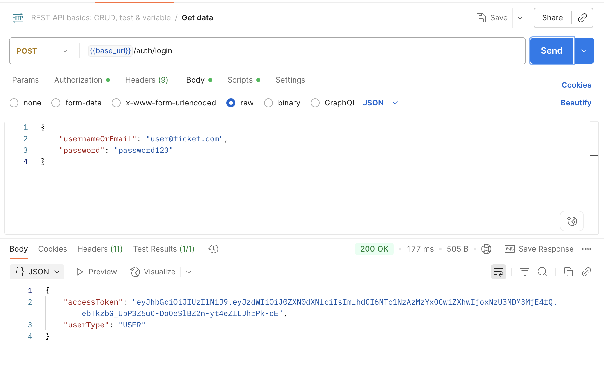
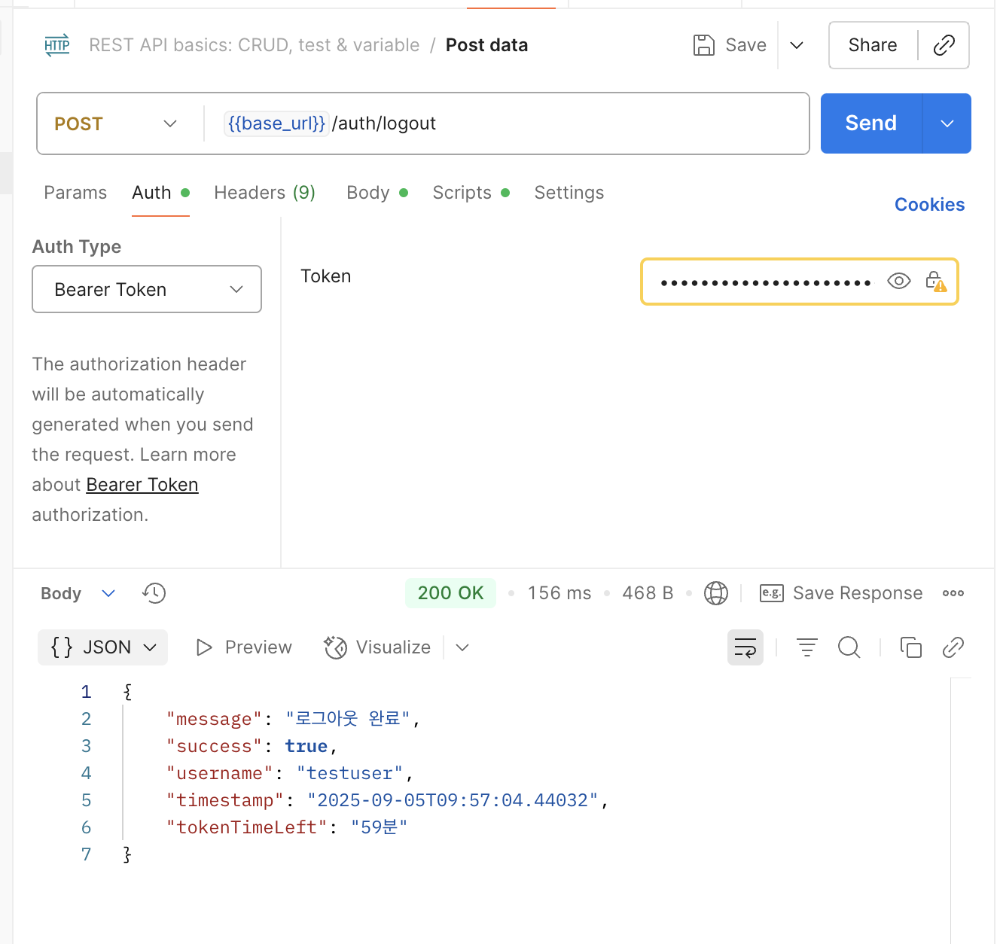

Error 처리 공통 클래스 in Spring Boot
들어가며
Reference에 표기된 스프링 MVC 패턴에서의 에러 핸들링 공식 블로그를 참고했습니다. 블로그 글은 2013년 글이지만 데모 어플리케이션은 2024년 기준으로 업데이트가 되어있습니다. 추가적으로 최신 예제에 관심 있으시면 https://github.com/paulc4/mvc-exceptions 참고 부탁드립니다.
아래 글에서는 다음 부분을 확인 가능합니다.
- 기존 코드
- 리팩토링한 코드와 개선점
- 주요 어노테이션
- 새로운 API에서 어떻게 에러를 추가할 수 있는지
리팩토링 코드 부분은 건너 뛰셔도 됩니다.
스프링 공식 블로그 권장 사항
- Global Exception Handling
- Using @ControllerAdvice Classes
- Exception handling methods annotated with @ExceptionHandler
- Using @ControllerAdvice Classes
- Errors and REST
RESTful GET requests may also generate exceptions and we have already seen how we can return standard HTTP Error response codes. However, what if you want to return information about the error? This is very easy to do. Firstly define an error class. we can return an instance from a handler as the @ResponseBody
- What to Use When?
Warning: Be careful mixing too many of these options in the same application. If the same exception can be handed in more than one way, you may not get the behavior you wanted. @ExceptionHandler methods on the Controller are always selected before those on any @ControllerAdvice instance. It is undefined what order controller-advices are processed.
logout 기존 코드 & 포스트맨 응답값



@PostMapping("/logout")
public ResponseEntity<?> logout(HttpServletRequest request, Authentication authentication) {
String username = authentication != null ? authentication.getName() : "anonymous";
// Authorization 헤더에서 토큰 추출
String authHeader = request.getHeader("Authorization");
if (authHeader != null && authHeader.startsWith("Bearer ")) {
String token = authHeader.substring(7);
try {
// 토큰 만료 시간 가져오기
long expirationTime = jwtUtil.extractClaims(token).getExpiration().getTime();
long timeLeft = (expirationTime - System.currentTimeMillis()) / 1000 / 60; // 분 단위
return ResponseEntity.ok(Map.of(
"message", "로그아웃 완료",
"username", username,
"tokenTimeLeft", timeLeft + "분",
"timestamp", LocalDateTime.now(),
"success", true
));
} catch (Exception e) {
return ResponseEntity.badRequest().body(Map.of(
"error", "토큰 처리 중 오류 발생",
"message", e.getMessage(),
"username", username,
"success", false
));
}
}
return ResponseEntity.ok(Map.of(
"message", "로그아웃 완료",
"username", username,
"timestamp", LocalDateTime.now(),
"success", true
));
}
Refactor 전 생각한 지점
- 로그아웃 완료 responseEntity의 코드 반복
- 에러 처리를 컨트롤러에서 분리하여 컨트롤러를 깨끗하게(?) 변경 (단일 책임 원칙)
- 분리해야할 부분 : 토큰 시간 계산 처리, 토큰 추출 로직
- DTO 및 응답값은 유지해야 함 (다른 코드에 사용하고 있을 수 있으므로)
- 스프링 공식 블로그 권장 글로벌 에러 핸들링 어노테이션 사용
- 다른 API에서도 동일하게 사용 가능하도록 확장성 유지
Refactor 과정
1. 공통 응답 DTO 생성
@Getter
@Builder
@JsonInclude(JsonInclude.Include.NON_NULL)
public class ApiResponse<T> {
private final String message;
private final T data;
private final boolean success;
private final String error;
@Builder.Default
private final LocalDateTime timestamp = LocalDateTime.now();
// 성공 응답 생성 메서드들
public static <T> ApiResponse<T> success(String message, T data) {
return ApiResponse.<T>builder()
.message(message)
.data(data)
.success(true)
.build();
}
public static <T> ApiResponse<T> success(String message) {
return ApiResponse.<T>builder()
.message(message)
.success(true)
.build();
}
// 실패 응답 생성 메서드들
public static <T> ApiResponse<T> error(String message, String error, T data) {
return ApiResponse.<T>builder()
.message(message)
.error(error)
.data(data)
.success(false)
.build();
}
public static <T> ApiResponse<T> error(String message, String error) {
return ApiResponse.<T>builder()
.message(message)
.error(error)
.success(false)
.build();
}
public static <T> ApiResponse<T> error(String message) {
return ApiResponse.<T>builder()
.message(message)
.success(false)
.build();
}
}
2. 로그아웃 응답 DTO 생성
@Getter
@Setter
@NoArgsConstructor
@AllArgsConstructor
public class LogoutResponse {
private String username;
private String tokenTimeLeft;
// username만 받는 생성자
public LogoutResponse(String username) {
this.username = username;
}
}
3. AuthController에서 Service 레이어 분리
@Service
public class AuthService {
private final JwtUtil jwtUtil;
public AuthService(JwtUtil jwtUtil) {
this.jwtUtil = jwtUtil;
}
public LogoutResponse processLogout(String token, String username) {
if (token != null) {
try {
// 토큰 만료 시간 계산
long expirationTime = jwtUtil.extractClaims(token).getExpiration().getTime();
long timeLeft = (expirationTime - System.currentTimeMillis()) / 1000 / 60;
return new LogoutResponse(username, timeLeft + "분");
} catch (Exception e) {
// 서비스에서는 예외를 그대로 던져서 컨트롤러에서 처리하도록 함
throw new TokenProcessingException("토큰 처리 중 오류 발생: " + e.getMessage(), e);
}
}
return new LogoutResponse(username);
}
}
4. 커스텀 예외 생성
JWT 토큰 처리 중 발생하는 예외를 처리하는 커스텀 예외 클래스
public class TokenProcessingException extends RuntimeException {
public TokenProcessingException(String message) {
super(message);
}
public TokenProcessingException(String message, Throwable cause) {
super(message, cause);
}
}
5. 글로벌 예외 핸들러 생성
@RestControllerAdvice
public class GlobalExceptionHandler {
@ExceptionHandler(TokenProcessingException.class)
public ResponseEntity<ApiResponse<?>> handleTokenProcessingException(
TokenProcessingException ex, HttpServletRequest request) {
// 현재 인증된 사용자 정보 가져오기
String username = getCurrentUsername(request);
LogoutResponse errorData = new LogoutResponse(username);
ApiResponse<LogoutResponse> response = ApiResponse.error(
"토큰 처리 중 오류 발생",
ex.getMessage(),
errorData
);
return ResponseEntity.badRequest().body(response);
}
private String getCurrentUsername(HttpServletRequest request) {
Authentication authentication = SecurityContextHolder.getContext().getAuthentication();
return authentication != null ? authentication.getName() : "anonymous";
}
// 다른 예외들도 필요에 따라 추가
@ExceptionHandler(Exception.class)
public ResponseEntity<ApiResponse<?>> handleGeneralException(Exception ex) {
ApiResponse<?> response = ApiResponse.error("서버 오류가 발생했습니다.", ex.getMessage());
return ResponseEntity.status(HttpStatus.INTERNAL_SERVER_ERROR).body(response);
}
}
6. 토큰 처리하는 유틸리티 클래스 생성
@Component
public class TokenExtractor {
public String extractTokenFromRequest(HttpServletRequest request) {
String authHeader = request.getHeader("Authorization");
if (authHeader != null && authHeader.startsWith("Bearer ")) {
return authHeader.substring(7);
}
return null;
}
}
7. 리팩토링된 컨트롤러로 수정
@RestController
@RequestMapping("/auth")
public class AuthController {
private final AuthService authService;
private final TokenExtractor tokenExtractor;
public AuthController(AuthenticationManager authenticationManager, JwtUtil jwtUtil, UserService userService, AuthService authService, TokenExtractor tokenExtractor) {
this.authenticationManager = authenticationManager;
this.jwtUtil = jwtUtil;
this.userService = userService;
this.authService = authService;
this.tokenExtractor = tokenExtractor;
}
@PostMapping("/logout")
public ResponseEntity<ApiResponse<LogoutResponse>> logout(
HttpServletRequest request,
Authentication authentication) {
String username = authentication != null ? authentication.getName() : "anonymous";
String token = tokenExtractor.extractTokenFromRequest(request);
LogoutResponse logoutData = authService.processLogout(token, username);
ApiResponse<LogoutResponse> response = ApiResponse.success("로그아웃 완료", logoutData);
return ResponseEntity.ok(response);
}
}
사용한 주요 어노테이션
Spring Boot 어노테이션
@RestControllerAdvice
@RestControllerAdvice
public class GlobalExceptionHandler {
// 전역 예외 처리 로직
}
- 용도: 전체 애플리케이션에서 발생하는 예외를 중앙집중식으로 처리
- 특징: @ControllerAdvice + @ResponseBody의 조합
- 작동 방식: 모든 컨트롤러에서 발생하는 예외를 가로채서 처리
@ExceptionHandler
@ExceptionHandler(TokenProcessingException.class)
public ResponseEntity<ApiResponse<LogoutResponse>> handleTokenProcessingException(
TokenProcessingException ex, HttpServletRequest request) {
// 특정 예외 처리 로직
}
- 용도: 특정 예외 타입에 대한 처리 메서드 지정
- 파라미터: 처리할 예외 클래스 타입
- 우선순위: 구체적인 예외 → 추상적인 예외 순으로 처리
@Component
@Component
public class TokenExtractor {
// 유틸리티 로직
}
- 용도: 일반적인 Spring 관리 컴포넌트 표시
- 특징: 재사용 가능한 유틸리티 클래스에 사용
- 스캔: @ComponentScan에 의해 자동으로 빈 등록
Jackson 어노테이션
@JsonInclude(JsonInclude.Include.NON_NULL)
- 용도: JSON 직렬화 시 null 값 제외
- 옵션:
- NON_NULL: null 값 제외
- NON_EMPTY: 빈 값 제외
- ALWAYS: 항상 포함
Refactor 결과

새로운 API에서 공통 구조 사용하기
- 새로운 예외 타입 추가
- GlobalExceptionHandler에 예외 처리 추가
- 새로운 API에서 ApiResponse 사용
Refactor 개선된 점
1. 코드 재사용성
- ApiResponse 클래스로 일관된 응답 형태
- TokenExtractor로 토큰 추출 로직 재사용
2. 관심사 분리
- 컨트롤러: HTTP 요청/응답 처리에만 집중
- 서비스: 비즈니스 로직 처리
- 예외 처리기: 전역 예외 처리
3. 유지보수성 향상
- 응답 형태 변경 시 ApiResponse만 수정
- 에러 처리 로직 변경 시 GlobalExceptionHandler만 수정
4. 확장성
- 새로운 API 추가 시 동일한 구조 사용 가능
- 새로운 예외 타입 쉽게 추가 가능
추가 공부 사항
- Factory Method Pattern: 객체 생성을 위한 정적 팩토리 메서드
- Java의 Optional, Collections 클래스에서도 동일하게 정적 팩토리 메소드를 사용하고 있으니 참고 바랍니다.
ApiResponse 에서 이 패턴을 사용했는데, 아래와 같은 의도가 있습니다.
1.메서드 이름만 봐도 어떤 응답을 생성하는지 즉시 알 수 있다.
// 생성자만 사용하는 경우
ApiResponse<User> response1 = new ApiResponse<>("성공", user, true, null, LocalDateTime.now());
ApiResponse<User> response2 = new ApiResponse<>("실패", null, false, "에러 메시지", LocalDateTime.now());
// 정적 팩토리 메서드 사용
ApiResponse<User> response1 = ApiResponse.success("성공", user);
ApiResponse<User> response2 = ApiResponse.error("실패", "에러 메시지");
2. 매개변수가 같은 경우 구분 가능하다
public class ApiResponse<T> {
// 생성자로는 불가능 (같은 시그니처)
// public ApiResponse(String message) { ... } // 성공용
// public ApiResponse(String message) { ... } // 실패용
// 정적 팩토리 메서드로 해결
public static <T> ApiResponse<T> success(String message) {
return new ApiResponse<>(message, null, true, null, LocalDateTime.now());
}
public static <T> ApiResponse<T> error(String message) {
return new ApiResponse<>(message, null, false, null, LocalDateTime.now());
}
}
Reference
- SpringBoot Exception handling https://spring.io/blog/2013/11/01/exception-handling-in-spring-mvc
- https://github.com/paulc4/mvc-exceptions
- jackson annotation https://github.com/FasterXML/jackson-annotations
- Factory Method Pattern: 객체 생성을 위한 정적 팩토리 메서드